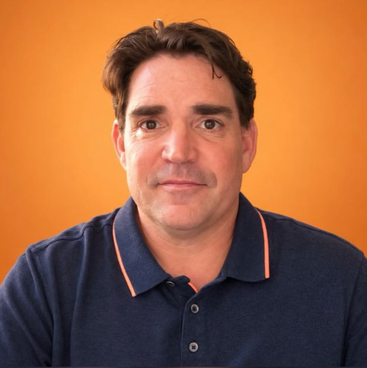

Depuis août 2025
Mission de direction du développement
Cabinet BGL · Avocats d'affaires · Toulouse
Création d'offres B2B pour des dirigeants de PME et d'ETI, ouverture de marchés, processus commerciaux et management d'une équipe de six personnes.
Je développe l’activité commerciale, fédère les équipes et pilote la performance.
Directeur commercial B2B, j’accompagne les entreprises dans leur croissance, de la stratégie à sa mise en œuvre. Je m’appuie sur mon expérience du management, de la vente complexe et de la direction de centre de profit.

À propos
Je suis directeur commercial B2B, avec 25 ans d’expérience dans le développement commercial et le management.
J’ai dirigé des équipes jusqu’à 50 personnes et piloté des activités avec une responsabilité directe sur leur rentabilité.
Mon parcours m’a permis d’accompagner des entreprises dans leur croissance, leur organisation et leur transformation commerciale.
J’aime construire des équipes, développer les compétences et transformer une stratégie en résultats concrets.
Aujourd’hui, je souhaite mettre cette expérience au service d’une PME ou d’une ETI en Occitanie.
01 / Ce que j'apporte
De la stratégie à son exécution : organiser, développer et faire progresser une activité B2B en associant les équipes, les processus et les indicateurs économiques.
Pilotage du chiffre d'affaires, de la marge et de la rentabilité. Budget, pricing et responsabilité du compte d'exploitation.
Recrutement, organisation des responsabilités et animation d'équipes, y compris sur deux niveaux hiérarchiques.
Conquête, vente complexe, négociation avec les dirigeants, grands comptes et réseaux de prescripteurs.
Segmentation, CRM, processus de vente, reporting et traduction de la stratégie en plans d'action opérationnels.
02 / Réalisations
Quelques résultats obtenus au fil de mon parcours professionnel.
Direction générale, responsabilité P&L et organisation d'une équipe allant jusqu'à 25 personnes.
CD2I · 2013–2020Refonte de l'acquisition B2B chez Wealth A7, avec encadrement de quatre collaborateurs.
Wealth A7 · 2020–2023Construction et animation du réseau de développement de CD2I.
CD2I · 2013–202003 / Expérience
De mes premières expériences commerciales à la direction générale, j’ai développé une approche concrète de la croissance B2B.
Création d'offres B2B pour des dirigeants de PME et d'ETI, ouverture de marchés, processus commerciaux et management d'une équipe de six personnes.
Développement d'une clientèle de dirigeants et de chefs d'entreprise, conseil et développement de prescripteurs.
Transformation de l'acquisition B2B, structuration des CRM et pilotage commercial pour des PME et ETI.
Responsabilité complète du P&L pendant sept ans ; jusqu'à 1 M€ de chiffre d'affaires, 25 collaborateurs et un réseau de plus de 50 prescripteurs.
Direction d'un réseau national de 50 commerciaux sur deux niveaux hiérarchiques ; formation des managers, déploiement de la stratégie et pilotage des indicateurs.
Co-gérance et management, vente en investissement locatif et développement commercial terrain.
04 / Formation
05 / Compétences complémentaires
06 / Présentation
Je me présente en vidéo et partage ma vision du management et du développement commercial.
Voir la vidéoÉchangeons sur une opportunité professionnelle